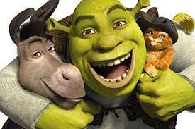
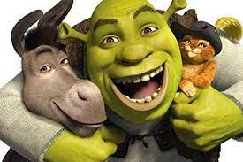

Who really is Shrek?
 

Somebody once told me the world is gonna roll me I ain't the sharpest tool in the shed She was looking kind of dumb with her finger and her thumb In the shape of an "L" on her forehead
Well the years start coming and they don't stop coming Fed to the rules and I hit the ground running Didn't make sense not to live for fun Your brain gets smart but your head gets dumb So much to do, so much to see So what's wrong with taking the back streets? You'll never know if you don't go You'll never shine if you don't glow
Hey now, you're an all-star, get your game on, go play Hey now, you're a rock star, get the show on, get paid And all that glitters is gold Only shooting stars break the mold